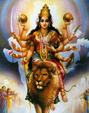

Дурга ("важкодоступна"), в індуїстської міфології одна з грізних іпостасей Деві або Парваті, дружини Шиви, яка виступала богинею-войовниці, захисницею богів і світового порядку від демонів. Один з головних її подвигів - знищення в кривавому поєдинку демона-буйвола Махіша, який вигнав богів з небес на землю.
Богиню зазвичай зображували десятірукой, сидить на леві або тигра, зі зброєю і атрибутами різних богів: з тризубом Шиви, диском Вішну, цибулею Ваю, списом Агні, палицею Індри, петлею Варуни. Жила Дурга в горах, в суспільстві восьми помічниць-богинь, доїдають залишки її кривавої трапези.
Культ Дурги, що поширився в середні століття по всій Індії, увібрав в себе культи кількох місцевих богинь: Коттравей і Еламми на дравидском півдні, бенгальської богині віспи Шіталли і т.п.
Примітка. Дравиди - санскритське назва великої групи індійських племен, що представляють по фізичній будові і мови абсолютно відмінну від арійців-індусів расу. Нащадки первинних мешканців Індії, відтиснутих на південь прийшли близько двох тисяч років до нашої ери з північного заходу арійцями.
До дравидійської раси належить населення Цейлону. Споріднені дравідам і живуть в Белуджистані брагуи. Найбільш чистим зберігся дравідійськой тип в пастушеском племені тода: темний, майже чорний колір шкіри, римський ніс, гарні очі, густі чорні кучеряве волосся, міцна статура. В етнологічному відношенні дравиди поділяються на три групи: племена мунда, або Мундаре, до яких зараховуються і племена якщо, або коларійцев, напівдике населення Чота-Нагпур, потім власне дравидийские племена і сінгалези.